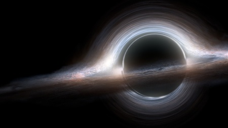
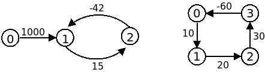

Para efeitos da nota atribuida à resolução de exercícios ao longo do semestre - Submeter até 23:59 de 20 de Dezembro
(o problema continuará depois disponível para submissão, mas sem contar para a nota)
No ano de 2163 os buracos negros foram descobertos. Um buraco negro é um túnel através do tempo e do espaço ligando dois sistemas estelares, e obedecendo a um conjunto de propriedades peculiares:
Todos os buracos negros têm uma diferença de tempo constante entre as duas extremidades. Por exemplo, um certo buraco negro pode fazer com que a pessoa que viaje através dele acabe por ir parar a 15 anos no futuro. Um outro buraco negro pode resultar numa viagem de 42 anos para o passado.
Um físico brilhante, que vive na Terra, quer usar os buracos negros para estudar a teoria do Big Bang. O cientista pretende ter uma sequência cíclica de buracos negros que o faça ir parar ao passado. Viajando nesta sequência muitas vezes, ele consegue ir parar tão para trás no tempo quanto o necessário, permitindo-lhe chegar ao início do universo e ver o Big Bang com os seus próprios olhos. Tens de o ajudar escrevendo um programa para ver se uma sequência como essa existe.
A primeira linha contém um inteiro C indicando o número de casos a ser analisado.
Cada um dos casos de teste começa com uma linha contendo dois números inteiros N e M. N é o número de sistemas estelares, numerados de 0 a N-1. O sistema solar é sempre indicado pelo número zero. M é o número de buracos negros e a seguir a esta linha inicial de um caso seguem-se precisamente M linhas explicando como são os buracos negros. Cada uma destas linhas tem três inteiros no formato a b t, indicando um buraco negro que permite viajar do sistema a para o sistema b, chegando no tempo t em relação ao tempo de partida.
O output deve conter exactamente C linhas, uma para cada caso, com a palavra "possivel" se for possível andar para trás no tempo indefinidamente (permitindo ao físico ver o Big Bang) ou a palavra "impossivel" se tal não for possível para os sistemas estelares e buracos negros dados.
São garantidos os seguintes limites em todos os casos de teste que irão ser colocados ao programa:
| 2 ≤ C ≤ 5 | Número de casos | |
| 2 ≤ N ≤ 1000 | Número de sistemas estelares | |
| 1 ≤ M ≤ 3000 | Número de buracos negros | |
| -1000 ≤ t ≤ 1000 | Tempo de chegada de um buraco negro (em relação ao tempo de partida) |
2 3 3 0 1 1000 1 2 15 2 1 -42 4 4 0 1 10 1 2 20 2 3 30 3 0 -60
possivel impossivel
O exemplo de input corresponde aos seguintes dois grafos:

No primeiro caso (o da esquerda) é possível viajar indefinidamente para trás no tempo usando o ciclo 1->2->1. No segundo caso (o da da direita) tal não é possível (o ciclo que existe não é negativo).
Desenho e Análise de Algoritmos (CC2001)
DCC/FCUP - Faculdade de Ciências da Universidade do Porto